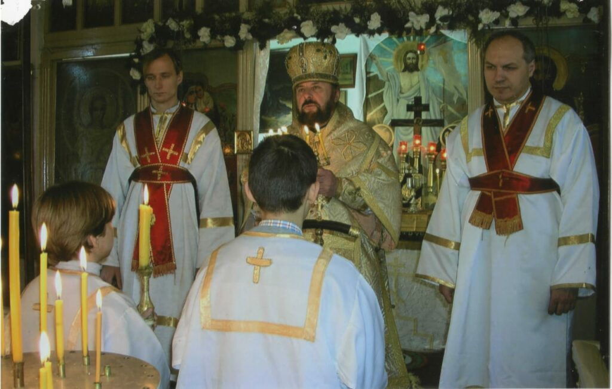

⛪ ¿Qué es la Iglesia Ortodoxa?
Usted quizás haya oído mencionar a la Iglesia Ortodoxa. ¿Qué es esta Iglesia?
Hace ya casi dos mil años, Jesucristo, el Hijo de Dios, vino a la tierra y fundó la Iglesia, a través de sus apóstoles y discípulos, para la salvación de la humanidad. Las enseñanzas de los apóstoles y de la Iglesia se esparcieron en los siguientes años. Las iglesias que fueron fundadas por los apóstoles pertenecen a los cinco patriarcados de Roma, Constantinopla, Alejandría, Antioquía y Jerusalén. Todas estas iglesias estaban unidas en la fe, la liturgia y la participación en los sacramentos. Después fueron fundadas las de Sinaí, Rusia, Grecia, Yugoslavia, Rumania y muchas más.
Estas iglesias, independientes en su administración, están en completa unión una con otra, con una excepción: la de Roma, que se separó de las otras en 1054 y, desde entonces, ha añadido nuevos dogmas. En materias de fe, doctrina, tradición, liturgias y servicios, estas otras iglesias son exactamente iguales.
No obstante, considerando el idioma diferente de cada una de estas iglesias, se encuentran en comunión y juntas constituyen y se llaman la Iglesia Ortodoxa (ortos = lo correcto, doxa = doctrina, culto).

Fuentes de la fe
Las enseñanzas de la Iglesia se derivan de dos fuentes (que en realidad son una): las Santas Escrituras y la Santa Tradición. Como dice el Evangelio según San Juan: «Y hay también otras muchas cosas que hizo Jesús, las cuales si se escribieran una por una, pienso que ni aun en el mundo cabrían los libros que se habrían de escribir» (Juan 21,25).
Estas «otras cosas» fueron transmitidas oralmente por los apóstoles y han llegado a nosotros en la Sagrada Tradición. La fe y la doctrina de la Iglesia Ortodoxa se encuentran en las Escrituras (la parte escrita de la Tradición, selecta de entre muchos libros por la Iglesia), los decretos de los Concilios Ecuménicos (los que han sido aceptados por toda la Iglesia) y en los escritos de los Padres de la Iglesia.
Lo que creemos
Creemos que el Señor Jesucristo es verdaderamente Dios, el Salvador, e Hijo engendrado de la misma esencia que el Padre antes de todos los siglos; y también verdaderamente Hombre, igual a nosotros en todo, menos en el pecado. Creemos que, por nuestra salvación, Él nació de una virgen, a quien llamamos Deípara (la que dio a luz a Dios) (San Lucas 1,43).
Creemos que el Espíritu Santo procede del Padre (San Juan 15,26), quien es el único origen de la Trinidad. Decir que el Espíritu Santo procede también del Hijo sería introducir dos orígenes en la Trinidad y romper la unidad de Dios. Los tres son uno porque tanto el Hijo como el Espíritu tienen su origen en el Padre: uno engendrado y el otro procediendo.
Adoración e íconos
Los cristianos ortodoxos adoramos a Dios en Trinidad (San Mateo 28,19) y honramos a los santos, pidiendo su intercesión ante Dios (Proverbios 15,29; Números 11,2). Entre los santos, el lugar principal es de la Deípara, pues a través de Ella Dios vino a nosotros (San Lucas 1,48).
De acuerdo al Séptimo Concilio Ecuménico (año 787), veneramos los íconos, no por sí mismos, sino como representaciones de Cristo y de los santos. Si Dios tomó forma física, se le puede representar físicamente.
Los siete sacramentos
Reconocemos siete «Misterios» o sacramentos:
- Bautismo y Crismación: son los medios de entrar en la Iglesia. Sin morir al hombre antiguo y revestirse del nuevo en el Bautismo, no podemos heredar el Reino de Dios.
- Eucaristía: participamos del verdadero Cuerpo y Sangre de Cristo, para la remisión de los pecados y la vida eterna.
- Confesión: Cristo nos da, a través del confesor, el perdón de nuestros pecados. Al pecar, ofendemos no solo a Dios, sino también a la Iglesia, el Cuerpo de Cristo del cual somos miembros. Por lo tanto, debemos pedir perdón ante un ministro de la Iglesia.
Estos tres sacramentos son esenciales para la vida espiritual y la deificación de todo cristiano.
- Ordenación: por la imposición de manos de un obispo, la Gracia Divina desciende sobre el que es ordenado y lo capacita para ser sacerdote y repartir esta Gracia, que es participación en la vida misma de Dios.
- Matrimonio: la Gracia Divina santifica la unión de dos seres, como Cristo bendijo la boda en Caná con su presencia y su primer milagro.
- Unción de los enfermos: las dolencias del cuerpo y del alma son curadas por este sacramento.
La deificación (theosis)
El hombre no puede participar en la esencia de Dios, pero, según san Gregorio Pálamas, puede participar en las «energías» o manifestaciones externas de Dios, que son parte de Dios, como los rayos del sol son parte del sol. Esto no se considera posible en el Occidente cristiano, donde lo mayor que puede esperar el cristiano es la «salvación», después de purgar sus faltas.
La Iglesia Ortodoxa espera en sus miembros la «deificación», verdadera unión con Dios, un proceso dinámico y gradual que dura toda la vida y no solo se decide al morir. A través del sacramento de la Ordenación, la Iglesia Ortodoxa ha tenido sucesión apostólica sin interrupción desde el día de Pentecostés.
Notas distintivas
La Iglesia Ortodoxa admite que hombres casados sean ordenados sacerdotes, sin imponer arbitrariamente el celibato sacerdotal. El que un hombre tenga vocación al sacerdocio no significa que necesariamente Dios le dé también vocación al celibato.
La Iglesia Ortodoxa admite, en ciertos casos, el divorcio y las segundas nupcias. Lo ideal es que el matrimonio dure hasta la muerte, pero los cónyuges son humanos y la Iglesia, aunque condena el divorcio, comprende que somos débiles e imperfectos y no se ciega al imponer la ley. Los hijos son el fruto del amor de los padres y no se deben evitar a no ser por una razón grave. La Iglesia Ortodoxa, madre y no tirana, deja que cada pareja tome la decisión después de consultar con su padre espiritual.
Las cuatro notas de la Iglesia
Estas son, brevemente, algunas de las características de la Iglesia Ortodoxa:
- Es única porque Nuestro Señor fundó solo una Iglesia.
- Es santa por estar unida a su única Cabeza, Jesucristo, y por la operación del Espíritu Santo.
- Es católica porque no conoce límites de lugar ni de tiempo.
- Es apostólica porque fue fundada por los apóstoles y mantiene sin cambio sus enseñanzas, escritas y orales.
Y es ortodoxa porque cree y enseña lo correcto.
Esta es la Iglesia Ortodoxa, fiel a su Fundador y transmitiendo su mensaje al mundo por veinte siglos, sin añadir ni quitar.